Sam (Yipu) Li
I build and run thermal-fluid test rigs. As an undergraduate research fellow in Dr. Yue Jin's nuclear thermal-hydraulics lab, I lead the spray cooling boiling rig from design through build, and I run microchannel and flow-boiling tests. I'm heading toward advanced nuclear and electronics cooling.
- Test rig lead: designed and hand-built the lab's spray cooling boiling rig, from CAD to sourcing to assembly
- Conference research: co-author, NURETH-22 microchannel paper (abstract accepted); micro-PIV and thermal testing
- Self-taught CFD: Ansys Icepak cold plate model at 1,000 W, 84.8 °C peak, energy balance closed within 0.1%
Spray cooling boiling test rig
The lab needed a rig to measure spray cooling boiling curves: water sprayed onto a heated copper surface, up to critical heat flux. Dr. Jin gave me ownership of the whole rig. I took it from requirements and CAD through sourcing, machining and assembly, and built it ahead of his schedule.
What I did
- Designed 2 versions of the copper heater block in SolidWorks and made the machining drawings for both (drawing details below).
- Revised the v1 drawing 3 times with the machinist to work around a 0.6" drilling-depth limit.
- Caught a sealing gap in the original design and added an AS568 O-ring face groove to both versions so the block seals into the wet chamber floor.
- Specified and sourced the cartridge heaters, heater junction box, chamber and high-temperature thermocouple sealants, glass viewing panel, seals and fittings. Selected Aflas O-rings for 110–150 °C steam.
- Hand-built the spray chamber and plumbed nitrogen cylinders to pressurize the water tank that feeds the nozzle.
- Wired DC power to the block's 7 cartridge heaters, then installed and sealed the thermocouples and O-ring joints.


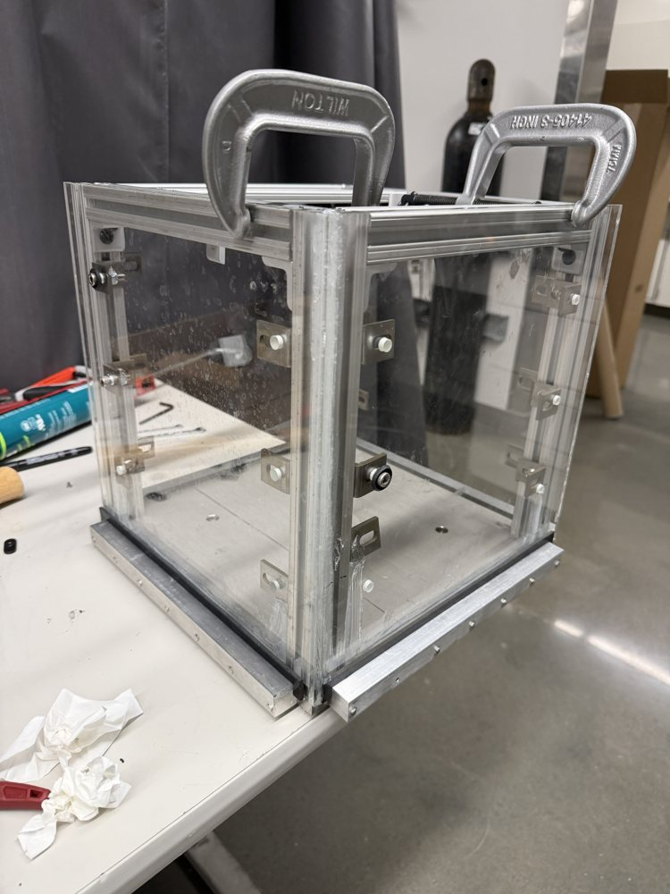

Heater block design: v1 to v2
v1 (HB-7P-001) is a copper block: a 2.25" flange on a 0.87" post that holds 7 cartridge heaters in 0.253" bores, 2.08" deep. Six 1 mm thermocouple holes sit 0.040" below the boiling face, 60° apart, each drilled to a different depth so they read temperature at different radii. I sized the O-ring face groove for an AS568-032 Aflas ring (1.916–2.124" groove, 0.052" deep) and added 4 #4-40 mounting holes.
v2 (HB-7P-002) is built for heat-flux measurement. It adds a raised 1.200" heated surface with a flat, 16 µin Ra finish. Six surface probes still sit 0.040" below the top, and a new stack of 3 thermocouples sits at 0.150, 0.275 and 0.400" below the top, all ending on the centerline. The temperature drop down that stack gives the heat flux through 1-D conduction and lets me extrapolate the surface temperature. I kept the same O-ring groove and moved the #4-40 holes to blind holes tapped from the bottom, so no screw hole breaks into the wet side.

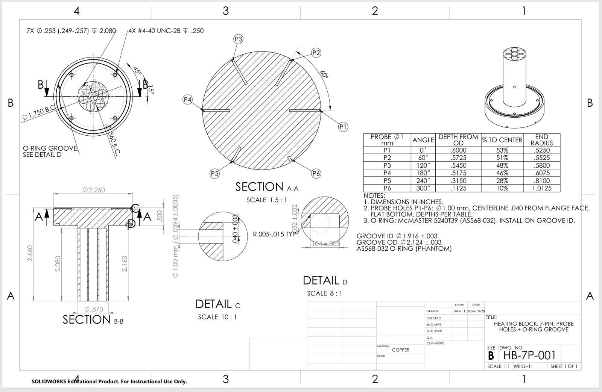

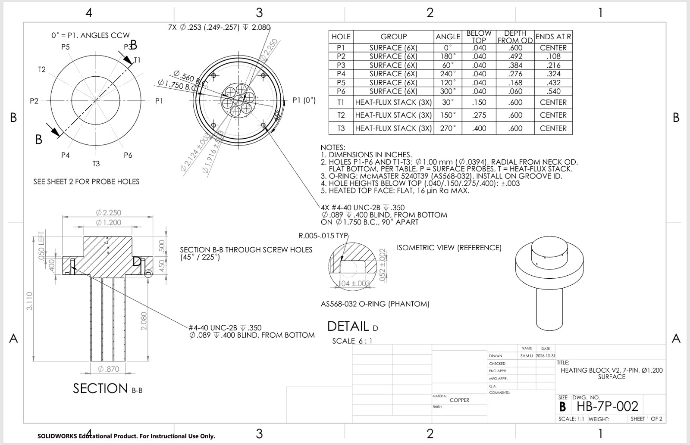

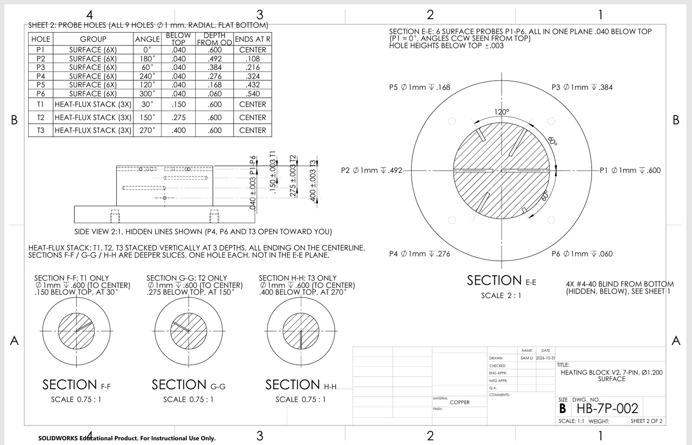
Next: how the rig will run
The rig is built. Commissioning comes next, then I'll run the boiling-curve tests and collect and analyze the data myself. The plan:
- Heat: DC power drives the 7 cartridge heaters, which heat the copper block from below. Power is stepped up one level at a time.
- Spray: nitrogen cylinders pressurize the water tank, which pushes water through the nozzle at the top of the chamber onto the heated surface.
- Two-phase cooling: as the surface heats up, the water film starts boiling and vaporizing off the surface. That phase change is what lets spray cooling carry very high heat flux.
- Measure: the thermocouples in the block log continuously. The 3-depth stack gives heat flux through 1-D conduction and an extrapolated surface temperature, and the 6 near-surface probes check how even the surface is.
- Steady state, then step: at each power level, wait until temperatures stop drifting (under 0.1 K/min), average the readings, then step up. A sudden jump in surface temperature at constant power signals critical heat flux, and power gets cut.
- Analyze: plot heat flux against surface superheat to build the boiling curve and find critical heat flux. Then repeat for different spray flow rates and water temperatures.
What I learned
- Talk to the machinist early. The 0.6" drilling limit forced a depth redesign.
- Every hole that enters a wet surface needs a seal plan, so the thermocouple ports got their own high-temperature sealant.
- Next: commissioning, then boiling-curve tests that feed a first-author paper for the ANS Student Conference (UC Berkeley, April 2027).
Microchannel thermal-hydraulic performance
Microchannel cold plates move a lot of heat in a small space, but every gain in heat transfer costs pressure drop. We test single-phase water in straight, zigzag and S-shaped channels to measure that trade-off, and use laser micro-PIV to see how the local flow structure drives it. I work alongside my PhD mentor on both the thermal tests and the PIV.


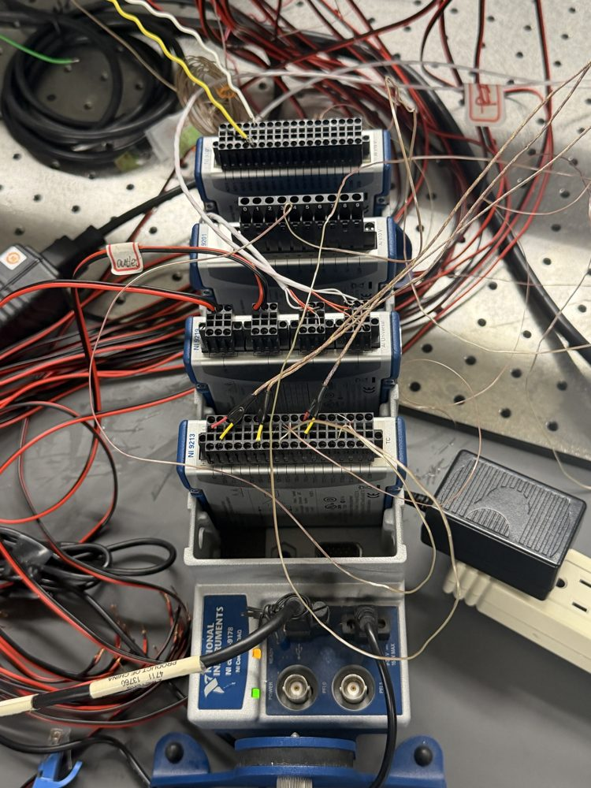
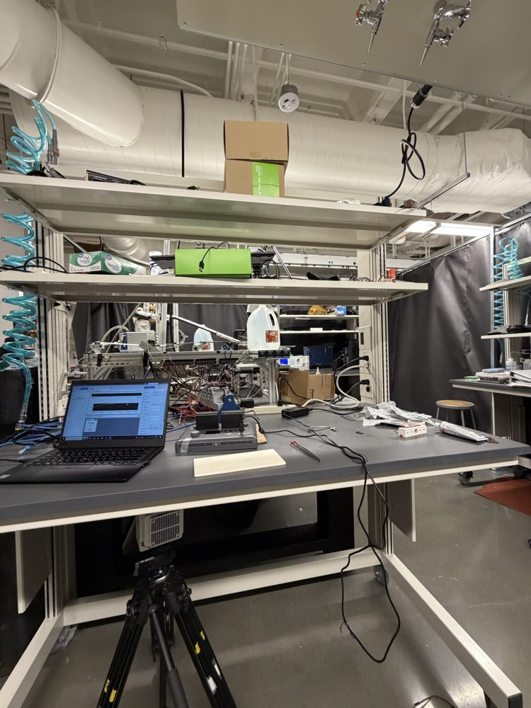
Thermal test method
- Leak check: pressurize the loop pneumatically to about 1,000 psi, hold, then bleed down in a controlled way to about 50 psi.
- Vacuum and fill: evacuate the loop and fill it with water so no air pockets skew the readings.
- Heater and sensors: mount the heater block with thermal paste; wire thermocouples, in-stream inlet and outlet RTDs, inlet and outlet pressure transducers and a flowmeter into an NI DAQ logged in DAQExpress.
- Run: hold a 10 °C chiller-controlled inlet, step through flow rates and heater powers, and record at steady state.
- Analyze: with my PhD mentor, compute heat transfer coefficient vs. pressure drop for each geometry and separate real trends from sensor and test artifacts.
- Shut down: drain with compressed air and clean the test section in an acetone, then IPA, ultrasonic bath.
Micro-PIV method
- Optical access: seal the test section with an O-ring under a glass window.
- Seeding: add tracer particles to the water so the laser sheet lights up the flow.
- Timing: sync the Phantom high-speed camera (Phantom Camera Control) to the laser through TSI Insight 4G, switching the camera trigger from internal to external.
- Capture: 4 flow cases × 150 image pairs each at 25 Hz, with laser current at 28 A. The time between laser pulses is shortened as flow speeds up so particles move a trackable distance.
- Process: cross-correlate the image pairs in Insight 4G to get velocity fields in each channel shape.
| Flow setting | 0.7 V | 1.0 V | 1.5 V | 2.0 V |
|---|---|---|---|---|
| Pulse separation Δt | 12 µs | 8 µs | 5.6 µs | 4.2 µs |
These measurements also give my PhD mentor ground truth for physics-informed PyTorch models, constrained by mass, momentum and energy conservation, that aim to match CFD at a fraction of the cost. I also commission the lab's two-phase flow boiling loop (vacuum, DI water fill, pressure test, startup).
CFD side of the project
My PhD mentor's 3-D Ansys Fluent model of the straight-channel test section (about 6.3 million cells) predicts the flow and the temperature in the plate, and our thermocouple and micro-PIV data are what it gets checked against. I assist with that comparison. The images below show what the model resolves.
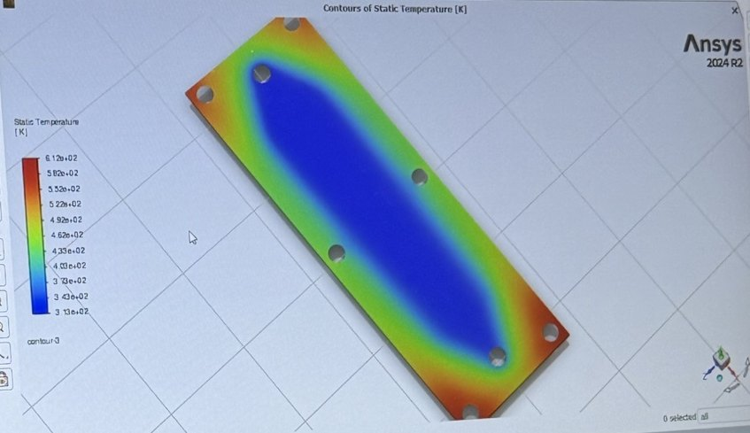
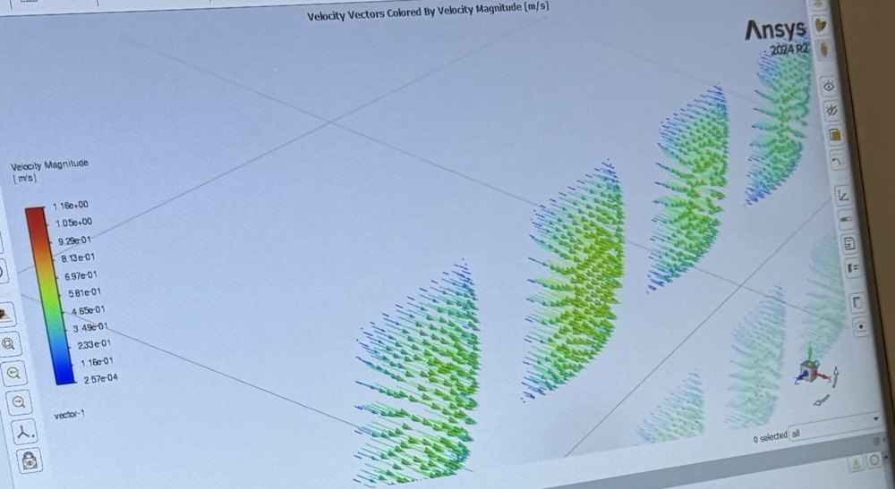
Publication
C. Mao, D. Tilawen, S. Li, Y. Jin, “Experimental Assessment of the Microchannel Thermal-Hydraulic Performance and Local Flow Structures,” NURETH-22 (American Nuclear Society), abstract accepted. Attending August 2027.
Liquid cold plate for a GPU-scale heat source
AI servers push 500 to 1,000 W through a single chip. I taught myself Ansys Icepak and built a conjugate heat transfer model of a copper cold plate: an 80 × 80 mm plate with 30 one-millimeter fins and 31 water channels over a 50 × 50 mm heat source, meshed at about 660k cells with local refinement in the channels.
Approach
- Baseline case: 500 W, 25 °C water at 1 L/min.
- Realistic case: 1,000 W with 40 °C inlet water, closer to a real data center loop.
- Checked the solution by closing the energy balance (999.99 W out of 1,000 W) and watching monitor points, not just residuals.
- Started the flow sweep: raising the flow from 1.0 to 1.5 L/min dropped the chip from 84.8 to 78.7 °C, at the cost of more pumping pressure.
- Next: finish the sweep up to 3 L/min, run a mesh study, and try 0.5 mm channels to keep the chip well under an 85 °C target.

| Case | Power | Inlet | Flow (L/min) | Chip max (°C) | R_th (°C/W) | ΔP (Pa) |
|---|---|---|---|---|---|---|
| Baseline | 500 W | 25 °C | 1.0 | 48.1 | 0.046 | n/a |
| Realistic | 1,000 W | 40 °C | 1.0 | 84.8 | 0.045 | 120 |
| Realistic, higher flow | 1,000 W | 40 °C | 1.5 | 78.7 | 0.039 | ~200 |
Model build and checks
- Built the geometry from primitives: copper base, side walls, lid, 30 fins, a 50 × 50 mm, 1,000 W chip, and a water block (Water at 320 K) that fills the channels.
- Set object priority so the copper fins cut through the coolant, then assigned a velocity or mass-flow inlet at 40 °C and a pressure outlet.
- Meshed with a separate refined region on the coolant (0.125 mm max element across the 1 mm channels) and a coarser global mesh, about 660k cells total.
- Solved laminar, steady conjugate flow and heat transfer, with monitor points on the chip, inlet and outlet.
- Called a run converged only when the monitor temperatures went flat and the energy balance closed (heat out of the water within 0.1% of the 1,000 W input), then read pressure drop from a surface-average fields summary.
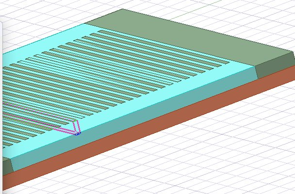


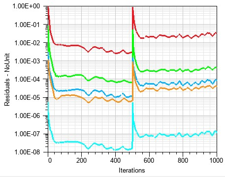

Multi-function ladder-climbing robot
This season's competition robot has to do several jobs: drive, climb a ladder, and launch bean bags and plastic balls. My subsystem is the running gear and the climbing hardware: the mecanum-wheel drive, the claws that latch onto the ladder, and the linear actuators that tilt the robot up so the claws can reach the rungs.
What I did
- Led concept generation for the climbing approach as the team's ideas person.
- Ran the force and stroke calculations to tilt the robot, and selected the linear actuators from them.
- Designed the clamps that mount the actuators to the chassis in SolidWorks, and placed them in the full robot assembly.
- 3D-printed prototype actuator mounts and parts on the team’s Bambu Lab printer so the team can test fit and motion before final fabrication.
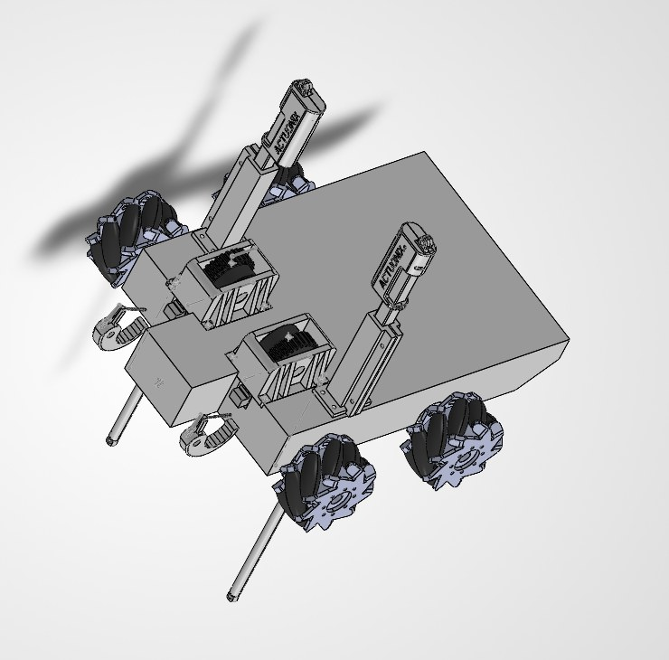
Papers and presentations
- NURETH-22 (American Nuclear Society): co-author, microchannel thermal-hydraulics abstract accepted. Attending August 2027.
- ANS Student Conference, UC Berkeley, April 2027: first-author spray cooling boiling paper in preparation.
- University of Missouri Fall Research Day, December 2026: research presentation.